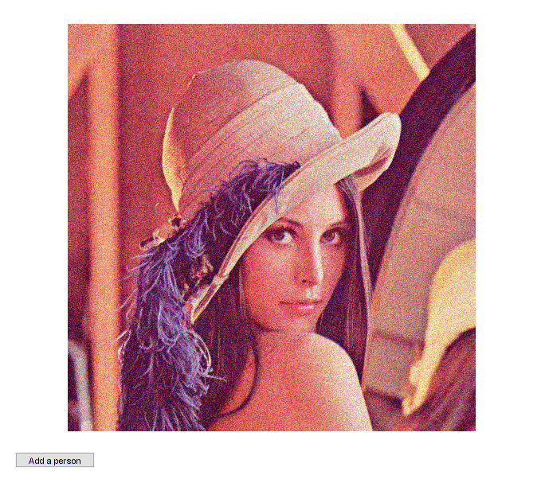
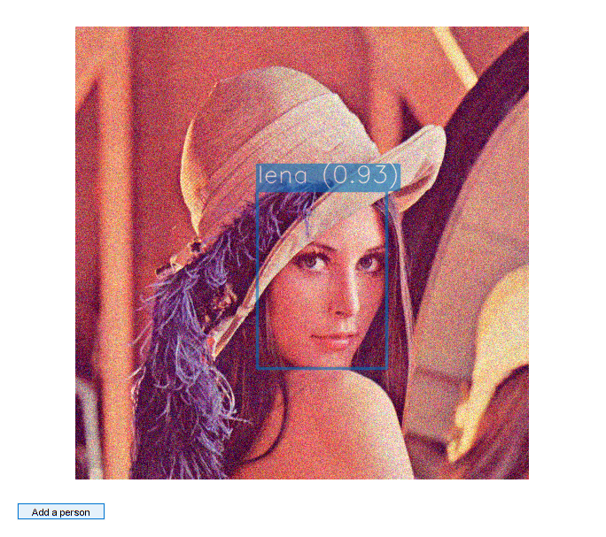
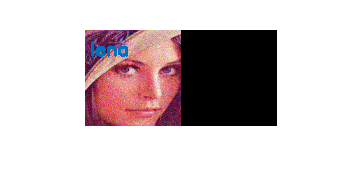

DNN Face Detection and Recognition
This tutorial will show us how to run deep learning models, with face detection and face recognition models pipeline.
Sources:
Contents
Face detection
Face detection network gets BGR image as input and produces set of bounding boxes that might contain faces. All that we need is just select the boxes with a strong confidence.
Face detector is based on SSD framework (Single Shot MultiBox Detector), using a reduced ResNet-10 model.
Face recognition
Network is called OpenFace. Face recognition model receives RGB face image of size 96x96. Then it returns 128-dimensional unit vector that represents input face as a point on the unit multidimensional sphere. So difference between two faces is an angle between two output vectors.
Code
Start the demo, then press "Add a person" to name a person that is recognized as an unknown one.
import deep learning models
[netDet, blobDetOpts] = ResNetSSD_FaceDetector(); [netRec, blobRecOpts] = OpenFace_Embedding(); assert(~netDet.empty() && ~netRec.empty());
options
confThreshold = 0.5; % minimum confidence for face detection scoreThreshold = 0.5; % minimum score for face recognition
prepare video input
cap = createVideoCapture([], 'lena'); pause(1); assert(cap.isOpened(), 'Could not initialize capturing'); frame = cap.read(); assert(~isempty(frame), 'Could not read frame');
prepare figure
hThumb = []; hImg = imshow(frame); hFig = ancestor(hImg, 'figure'); setappdata(hFig, 'flag',false); hBtn = uicontrol('Parent',hFig, 'Style','pushbutton', ... 'Position',[20 20 100 20], 'String','Add a person', ... 'Callback',@(~,~) setappdata(hFig, 'flag',true));
dataset of extracted faces and corresponding names
vecs = zeros(128,0,'single'); % feature vectors names = cell(1,0); faces = zeros([96 96 3 0], 'uint8'); % only needed for visualization
main loop that receives a frames from a camera and makes a recognition of every detected face on the frame
while ishghandle(hImg) % read frame frame = cap.read(); if isempty(frame), break; end out = frame; % detect faces rects = detectFaces(frame, netDet, blobDetOpts, confThreshold); for i=1:size(rects,1) % preprocess face rect = rects(i,:); face = alignFace(cv.Rect.crop(frame, rect)); % recognize face vec = face2vec(face, netRec, blobRecOpts); [name, score] = recognizeFace(vec, vecs, names, scoreThreshold); % show detection and prediction out = insertAnnotation(out, rect, sprintf('%s (%.2f)', name, score), ... 'Color',name2clr(name, names), 'TextColor',[255 255 255], ... 'Thickness',2, 'FontScale',0.9); end % update plot set(hImg, 'CData',out); drawnow; % check if add-a-person button is pressed flag = ishghandle(hFig) && getappdata(hFig, 'flag'); if flag && ~isempty(rects) setappdata(hFig, 'flag',false); % prompt for name name = inputdlg('Enter person name:'); name = strtrim(name{1}); % face representation as feature vector rect = rects(1,:); face = alignFace(cv.Rect.crop(frame, rect)); vec = face2vec(face, netRec, blobRecOpts); % store vecs(:,end+1) = vec; names{end+1} = name; % visualize face + name face = cv.resize(face, [96 96]); face = cv.putText(face, name, [5 25], ... 'Color',name2clr(name, names), 'FontScale',0.6, 'Thickness',2); faces(:,:,:,end+1) = face; % show montage of tracked people if ishghandle(hThumb) clf(hThumb, 'reset'); figure(hThumb) else hThumb = figure; end montage(faces, 'Size',[NaN 2]); movegui(hThumb, 'east') end end cap.release();
Helper functions
function [rects, confs] = detectFaces(img, net, blobOpts, thresh) %DETECTFACES Run face detection network to detect faces on input image % % You may play with input blob sizes to balance detection quality and % efficiency. The bigger input blob the smaller faces may be detected. % % detect faces net.setInput(cv.Net.blobFromImages(flip(img,3), blobOpts{:})); dets = net.forward(); % SSD output is 1-by-1-by-ndetections-by-7 % d = [img_id, class_id, confidence, left, bottom, right, top] dets = permute(dets, [3 4 2 1]); % filter out weak detections if nargin < 4, thresh = 0.5; end idx = (dets(:,2) == 1 & dets(:,3) > thresh); % 0: background, 1: face dets = dets(idx,:); % adjust relative coordinates to image size sz = [size(img,2) size(img,1)]; dets(:,4:7) = bsxfun(@times, dets(:,4:7), [sz sz]); % output detections (clamp coords and remove small and out-of-bound rects) rects = cv.Rect.from2points(dets(:,4:5), dets(:,6:7)); rects = cv.Rect.intersect(rects, [0 0 sz]); idx = (cv.Rect.area(rects) >= 10); rects = rects(idx,:); confs = dets(idx,3); end function img = alignFace(img) %ALIGNFACE Align face to make the eyes and bottom lip appear in the same location % % OpenFace expects faces to be aligned, it uses Dlib. % %TODO: not implemented, maybe we could port this: % https://www.pyimagesearch.com/2017/05/22/face-alignment-with-opencv-and-python/ %TODO: we could also use facial landmarks from opencv_contrib face module % (cv.Facemark and cv.FacemarkKazemi) end function vec = face2vec(img, net, blobOpts) %FACE2VEC Get 128 floating points feature vector % % Run face recognition network to receive 128-dimensional unit feature % vector from input face image. % net.setInput(cv.Net.blobFromImages(img, blobOpts{:})); vec = net.forward(); vec = vec(:); end function [name, score] = recognizeFace(vec, vecs, names, thresh) %RECOGNIZEFACE Perform face recognition % % Match a new feature vector with registered ones. Return a name of the % best matched person. % % (NOTE: For more advanced usage, we could train an SVM classifier) % % See also: pdist2 % if nargin < 4, thresh = 0.5; end name = 'unknown'; score = -1; if ~isempty(vecs) scores = vec.' * vecs; % dot-product of vec against each vecs(:,i) [s, idx] = max(scores); if s > thresh name = names{idx}; score = s; end end end function clr = name2clr(name, names) clrs = round(255 * lines(7)); idx = find(strcmp(name, names)); if isempty(idx) clr = [128 128 128]; else idx = rem(idx - 1, 7) + 1; clr = clrs(idx,:); end end function img = insertAnnotation(img, rect, str, varargin) % See also: insertObjectAnnotation, insertShape, insertText p = inputParser(); p.addParameter('Alpha', 0.6); p.addParameter('Thickness', 1); p.addParameter('Color', [255 255 0]); p.addParameter('TextColor', [0 0 0]); p.addParameter('FontFace', 'HersheySimplex'); p.addParameter('FontScale', 0.4); p.addParameter('AntiAlias', true); p.addParameter('Shape', 'rectangle'); p.parse(varargin{:}); opts = p.Results; opts.Shape = validatestring(opts.Shape, {'rectangle','circle'}); thick = 1; [sz,b] = cv.getTextSize(str, 'Thickness',thick, ... 'FontFace',opts.FontFace, 'FontScale',opts.FontScale); txt_rect = [rect(1), rect(2)-sz(2)-b, sz(1), sz(2)+b]; txt_orig = [rect(1), rect(2)-b]; if opts.AntiAlias alias = {'LineType','AA'}; else alias = {'LineType',8}; end overlay = img; if strcmp(opts.Shape, 'rectangle') overlay = cv.rectangle(overlay, rect, ... 'Color',opts.Color, 'Thickness',opts.Thickness, alias{:}); else c = rect(1:2) + rect(3:4)/2; r = max(rect(3:4)/2); overlay = cv.circle(overlay, c, r, ... 'Color',opts.Color, 'Thickness',opts.Thickness, alias{:}); end overlay = cv.rectangle(overlay, txt_rect, ... 'Color',opts.Color, 'Thickness','Filled', alias{:}); if opts.Thickness > 1 overlay = cv.rectangle(overlay, txt_rect, ... 'Color',opts.Color, 'Thickness',opts.Thickness, alias{:}); end overlay = cv.putText(overlay, str, txt_orig, ... 'FontFace',opts.FontFace, 'FontScale',opts.FontScale, ... 'Color',opts.TextColor, 'Thickness',thick, alias{:}); img = cv.addWeighted(img,1-opts.Alpha, overlay,opts.Alpha, 0); end
Pretrained models
function dname = get_dnn_dir(dname) %GET_DNN_DIR Path to model files, and show where to get them if missing dname = fullfile(mexopencv.root(), 'test', 'dnn', dname); b = isdir(dname); if ~b % display help of calling function % (assumed to be a local function in current file) st = dbstack(1); help([mfilename() filemarker() st(1).name]) end assert(b, 'Missing model: %s', dname); end function [net, blobOpts] = ResNetSSD_FaceDetector() %RESNETSSD_FACEDETECTOR face detector based on SSD framework with reduced ResNet-10 backbone % % homepage = https://github.com/opencv/opencv/blob/3.4.0/samples/dnn/face_detector/how_to_train_face_detector.txt % % ## Model % % file = test/dnn/ResNetSSD_FaceDetector/deploy.prototxt % url = https://github.com/opencv/opencv/raw/3.4.0/samples/dnn/face_detector/deploy.prototxt % hash = 006BAF926232DF6F6332DEFB9C24F94BB9F3764E % % ## Weights % % file = test/dnn/ResNetSSD_FaceDetector/res10_300x300_ssd_iter_140000.caffemodel % url = https://github.com/opencv/opencv_3rdparty/raw/dnn_samples_face_detector_20170830/res10_300x300_ssd_iter_140000.caffemodel % hash = 15aa726b4d46d9f023526d85537db81cbc8dd566 % size = 10.1 MB % dname = get_dnn_dir('ResNetSSD_FaceDetector'); net = cv.Net('Caffe', ... fullfile(dname, 'deploy.prototxt'), ... fullfile(dname, 'res10_300x300_ssd_iter_140000.caffemodel')); blobOpts = {'SwapRB',false, 'Crop',false, 'Size',[300 300], 'Mean',[104 117 123]}; end function [net, blobOpts] = OpenFace_Embedding() %OPENFACE OpenFace embedding for face recognition % % homepage = https://cmusatyalab.github.io/openface/ % % ## Model + Weights % % file = test/dnn/OpenFace/nn4.small2.v1.t7 % url = https://storage.cmusatyalab.org/openface-models/nn4.small2.v1.t7 % hash = ac8161a4376fb5a79ceec55d85bbb57ef81da9fe % size = 30 MB % dname = get_dnn_dir('OpenFace'); net = cv.Net('Torch', fullfile(dname, 'nn4.small2.v1.t7')); blobOpts = {'SwapRB',false, 'Crop',false, 'Size',[96 96], 'ScaleFactor',1/255}; end